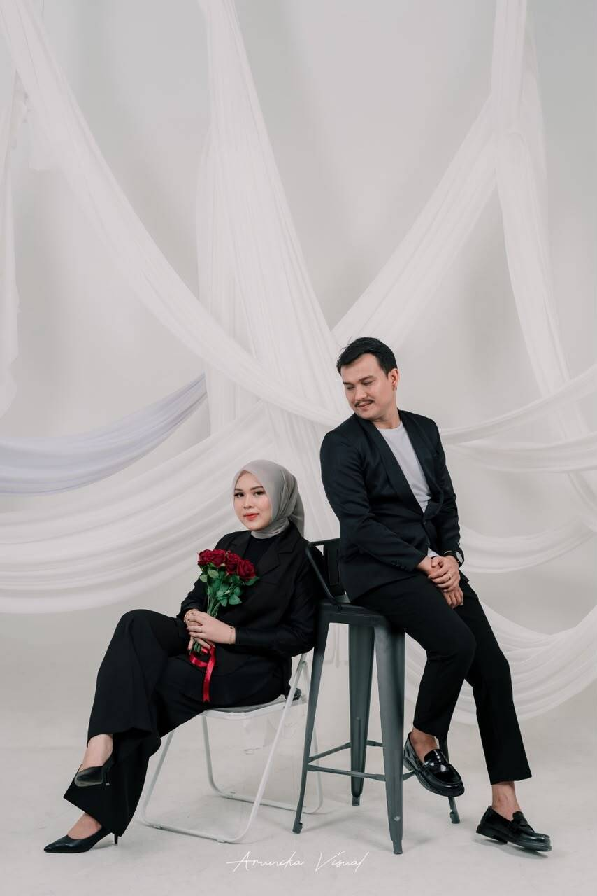
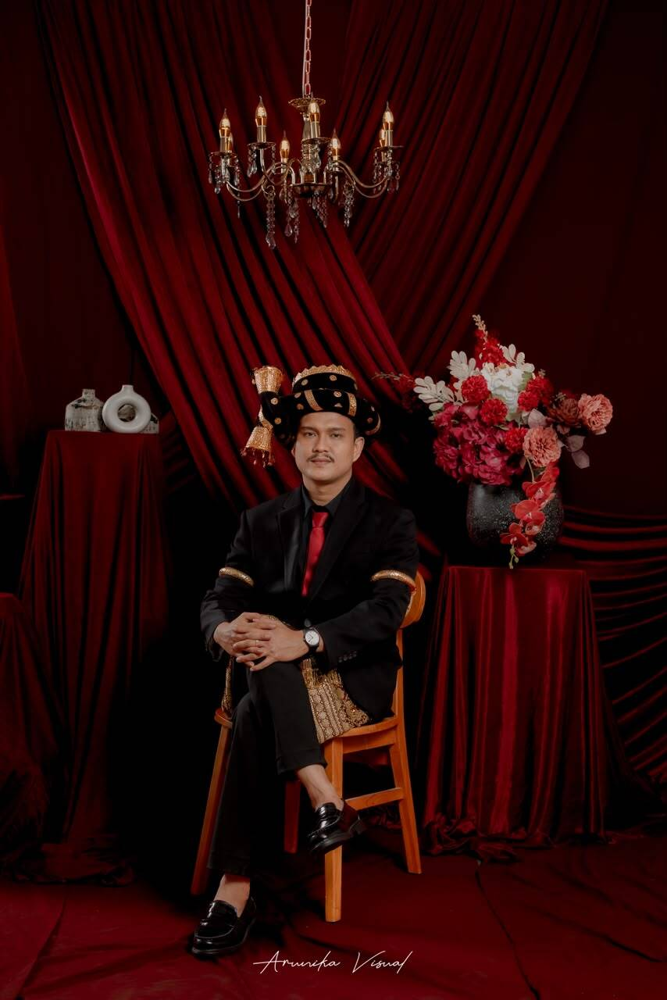
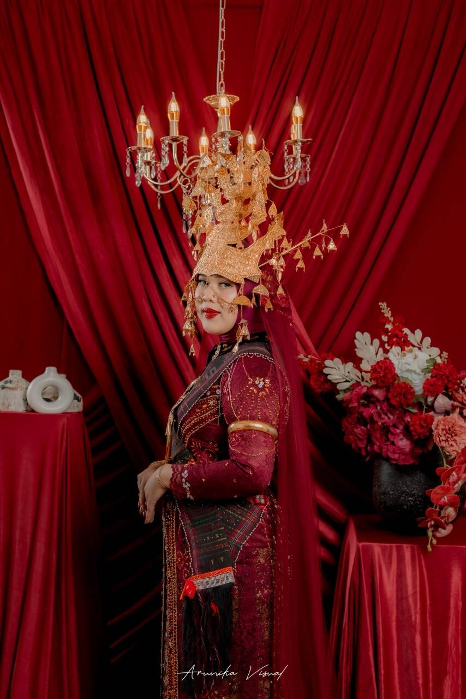
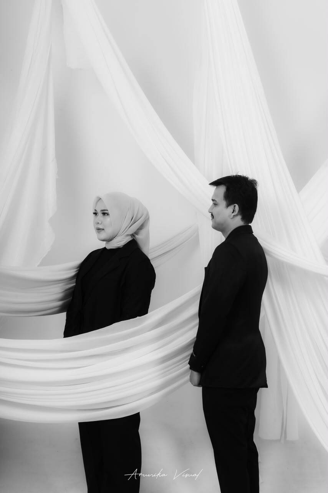
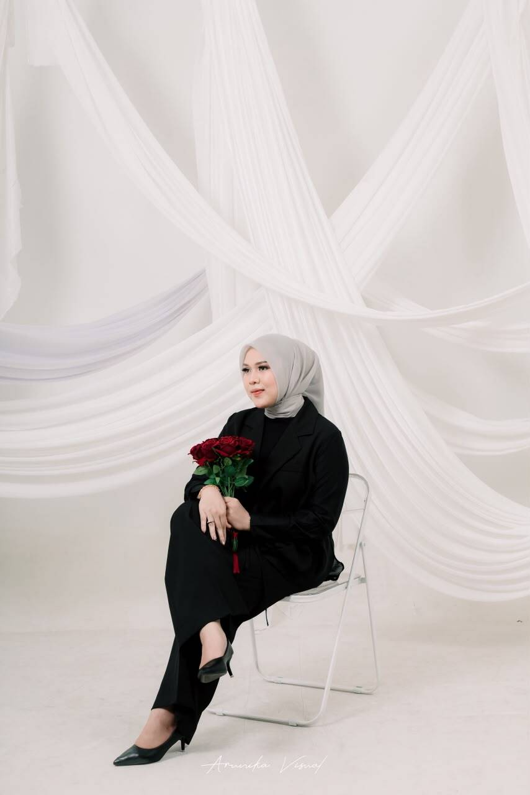
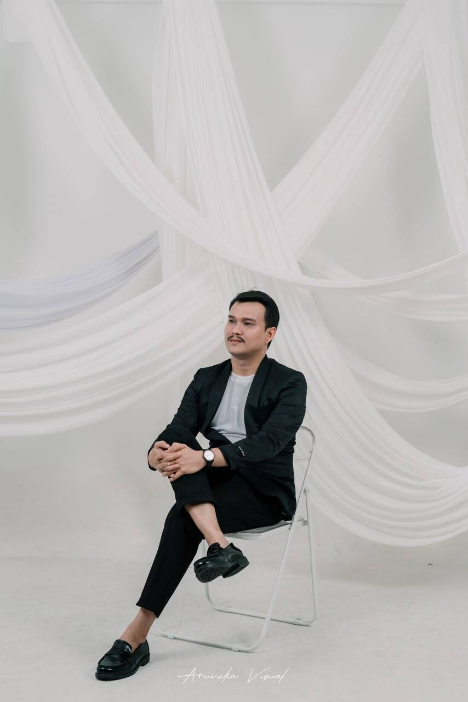
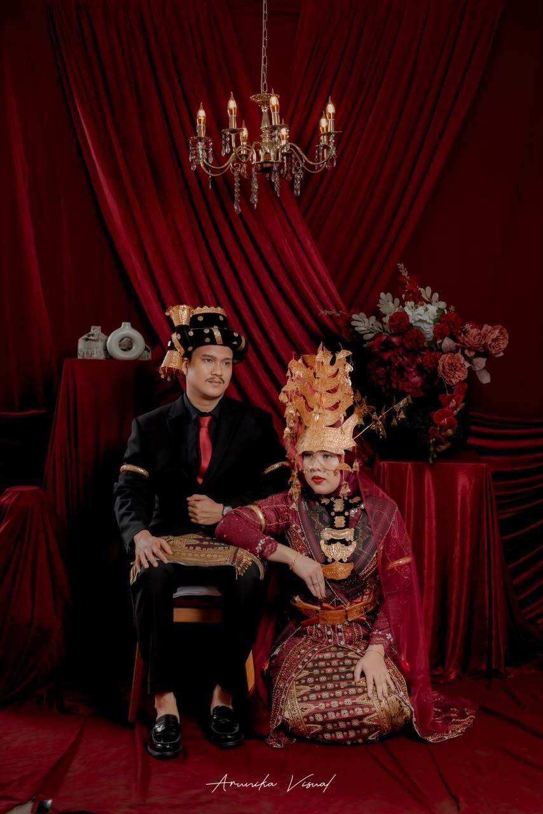
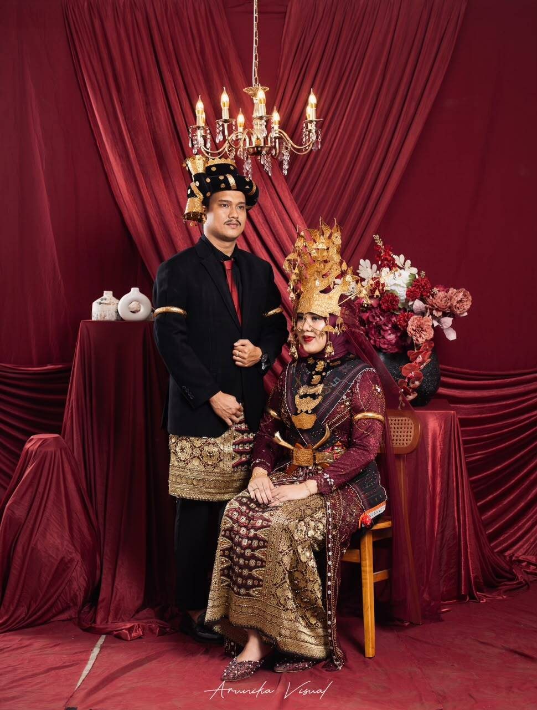

The Wedding Of
Efrida
&
Ferdy
Sabtu, 17 Oktober 2026
Save The Date
"Segala sesuatu Kami ciptakan berpasang-pasangan agar kamu mengingat kebesaran Allah."
Adz-Dzariyat : 49
Ferdy Hasan Ramadhanu Daulay,
S. Akun
Putra dari
Bapak Aidil Fitri Daulay, S. H.
& Ibu Fatimah Roslila Siregar, S.H.
&
Bdn. Efrida Irma Sari Siregar, S. Keb
Putri dari
Bapak Arnas Siregar, S. E.
& Ibu Hj. Nirmala, Am. Keb
Rangkaian Acara
Wedding Event
Akad
Resepsi
Lokasi Acara
GEDUNG NPC HALL SERBAGUNA
Jl. Sisingamangaraja lintas batunadua Gg. Sabar
Wedding Gift
Doa restu Anda merupakan karunia terbesar bagi kami. Namun, jika Anda bermaksud memberikan tanda kasih, dapat melalui fitur di bawah ini:
Bank BNI
649386893
a.n Ferdy Hasan Ramadhanu
Bank BRI
3343 0104 9464 533
a.n Efrida Irma Sari
Koleksi Memori
Our Gallery








Guestbook
Konfirmasi
Tinggalkan pesan, doa, dan konfirmasi kehadiran Anda untuk acara kami.
Nasihat Pernikahan
QS. An-Nur : 32
HR. Al-Baihaqi
"Merupakan suatu kehormatan dan kebahagiaan bagi kami apabila Bapak/Ibu/Saudara/i berkenan hadir untuk memberikan do'a restu kepada kami."
Terima Kasih
Efrida & Ferdy
Keluarga Wanita
Arnas Siregar
& Hj. Nirmala
Keluarga Pria
Aidil Fitri Daulay &
Fatimah Roslila Siregar